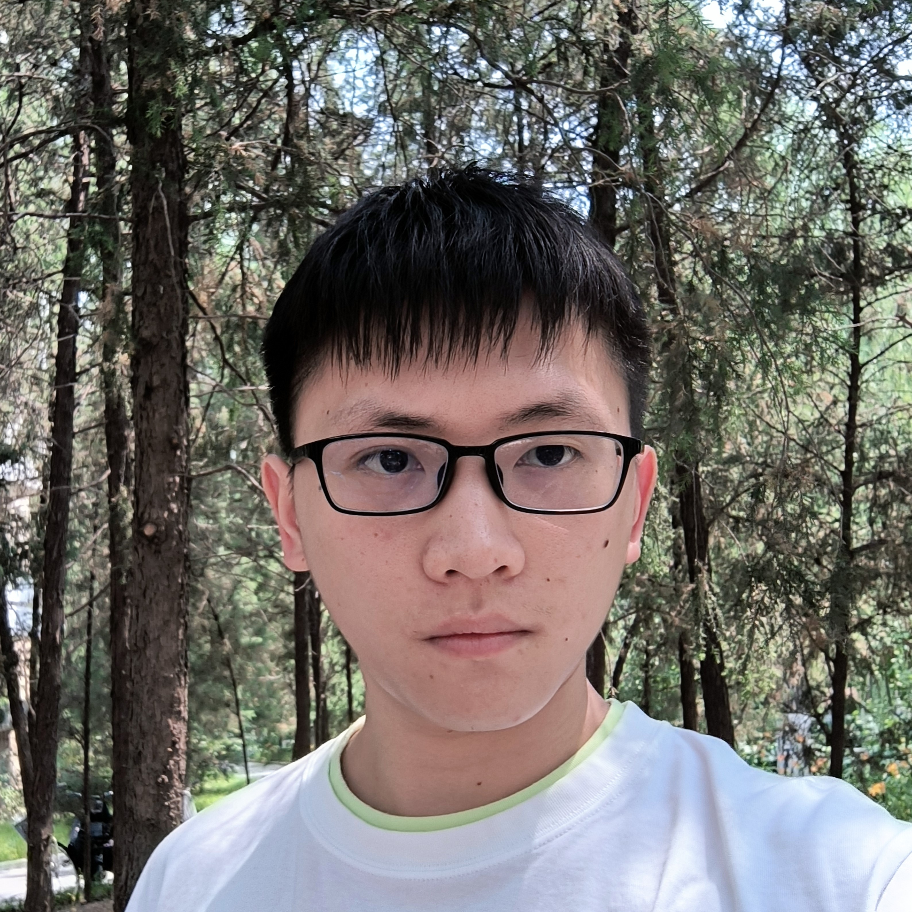
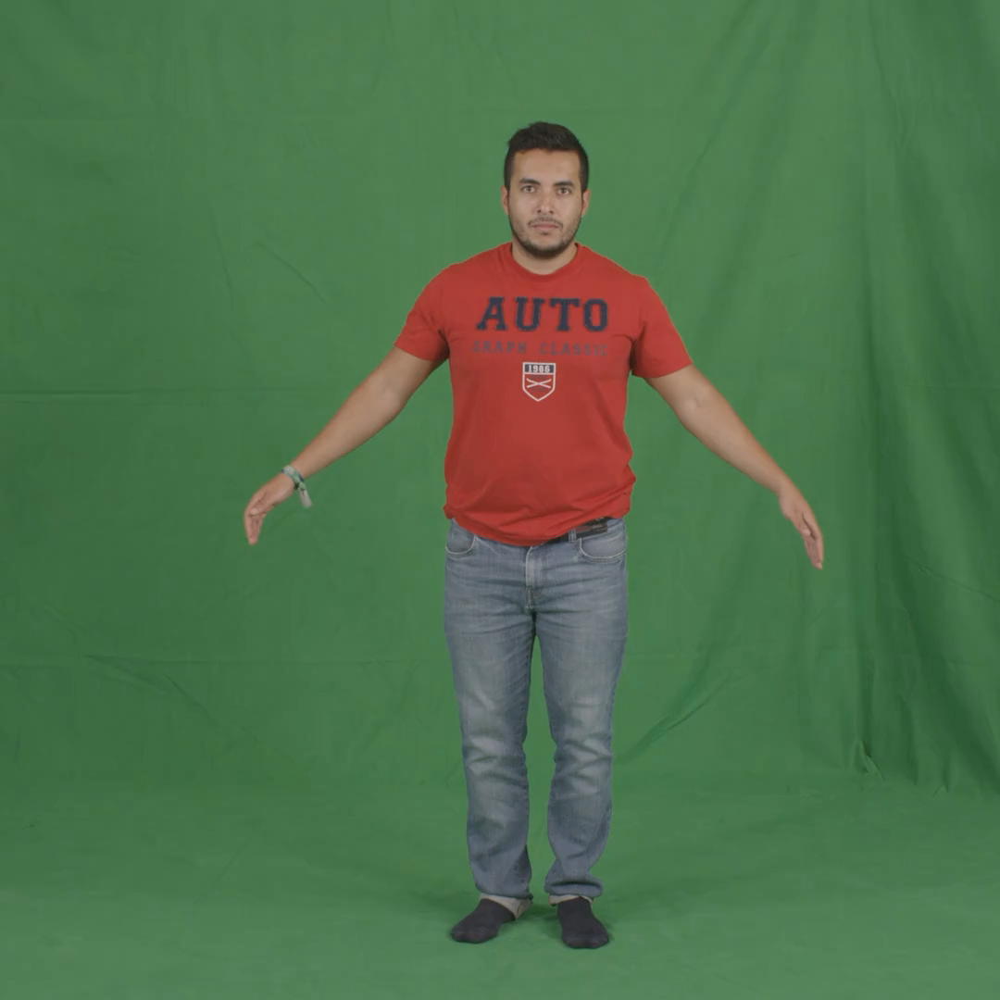
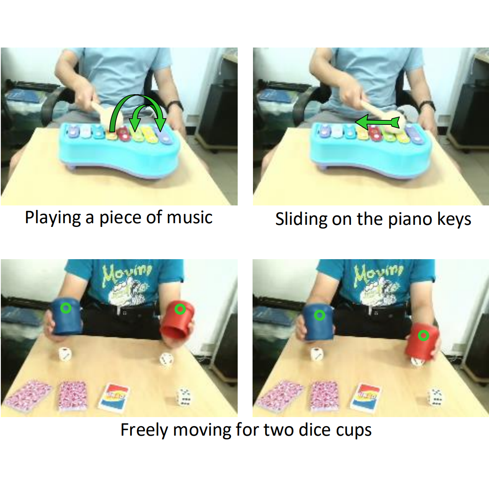
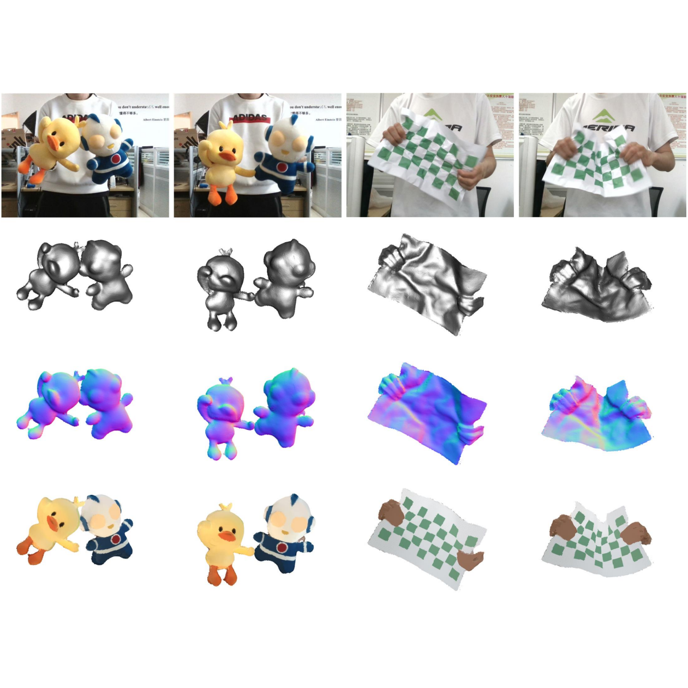
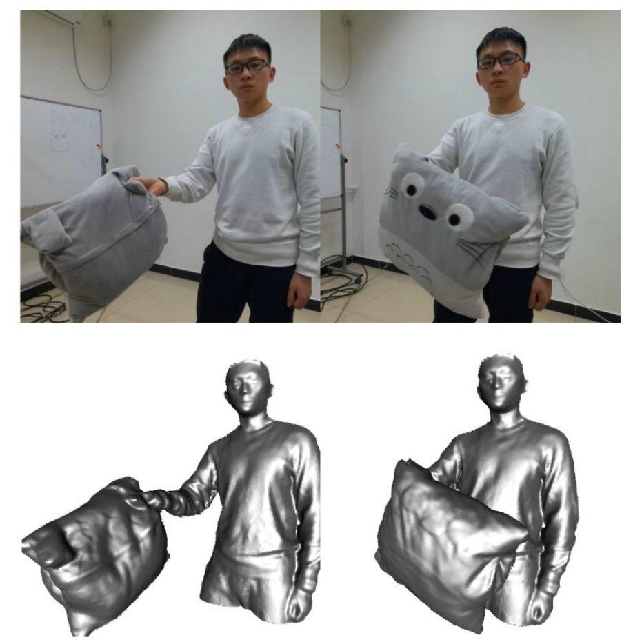

Wenbin Lin
I am a 4th year PhD student in School of Software, Tsinghua University advised by Prof. Feng Xu . Previously, I obtained my bachelor's degree from Department of Automation, Tsinghua University in 2020.
Email /
Scholar /
Github

Education
Ph.D.
2020.08 ~ present
School of Software, Tsinghua University
B.S.
2016.08 ~ 2020.06
Department of Automation, Tsinghua University
Publications
My research focuses on 3D vision and graphics, especially 3D human digitalization, 3D reconstruction and animation.
Your browser does not support the video tag.

Relightable and Animatable Neural Avatars from Videos
Wenbin Lin , Chengwei Zheng , Jun-Hai Yong, Feng Xu
AAAI , 2024
project page
/
video
/
paper

EditableNeRF: Editing Topologically Varying Neural Radiance Fields by Key Points
Chengwei Zheng , Wenbin Lin , Feng Xu
CVPR , 2023
project page
/
video
/
paper

A Self-occlusion Aware Lighting Model for Real-time Dynamic Reconstruction
Chengwei Zheng , Wenbin Lin , Feng Xu
TVCG , 2022
video
/
paper

OcclusionFusion: Occlusion-aware Motion Estimation for Real-time Dynamic 3D Reconstruction
Wenbin Lin , Chengwei Zheng , Jun-Hai Yong, Feng Xu
CVPR , 2022
project page
/
video
/
paper
Services
I have served as a reviewer of CVPR, ICCV, ECCV, TVCG.
The website template was borrowed from Jon Barron .
{kind=link}